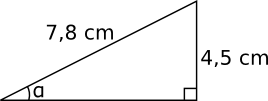
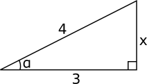
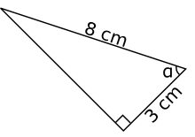
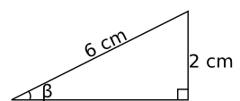
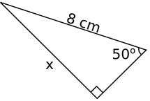
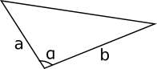

6. Trigonometri i en rätvinklig triangel
Vi börjar med att studera vinklar i rätvinkliga trianglar som är likformiga.
Då vi förstorar eller förminskar en rätvinklig triangel märker vi att förhållandet mellan sidorna hålls konstant. För vinklarna gäller att storleken på vinklarna är samma i de likformiga trianglarna.
Sinus, cosinus och tangens är ett mått på förhållandet mellan sidorna och storleken på en bestämd vinkel i en rätvinklig triangel.
Definition av sinus, cosinus och tangens.
 | \( \sin \alpha = \dfrac{a}{c} \) \( \cos \alpha = \dfrac{b}{c} \) \( \tan \alpha = \dfrac{a}{b} \) |
Exempel 1 Bestäm storleken av \( \alpha \) i triangeln nedan.

Exempel 2 Vi vet att \( \cos \alpha = \dfrac{3}{4} \). Bestäm \( \sin \alpha \) och \( \tan \alpha \).
Lösning
Vi börjar med att rita en bild.

Pyhtagoras ger oss att
\( \begin{array}{rl} 4^2 = & 3^2+x^2 \\ x^2 = & 16-9 = 7 \\ x = & \sqrt{7} \textrm{ eftersom vi har en sträcka.} \\ \sin \alpha = & \dfrac{\sqrt{7}}{4} \\ \\ \tan \alpha = & \dfrac{\sqrt{7}}{3} \\ \end{array} \)
För att bestämma arean för en triangel kan vi utnyttja sinus.
\( A=\dfrac{1}{2}bc\sin\alpha. \)

Exempel 3 Bestäm arean av triangeln i figuren nedan.

Lösning
Arean får vi via \( A=\dfrac{1}{2}ab\sin\alpha = \dfrac{1}{2}\cdot 9,5 \cdot 7,5 \sin 50^{\circ} = 27,3 \) cm2.
Räkna trigonometri på GeoGebra
Bestämma värdet av vinklar och bestämma storleken av vinklar.
Uppgifter
Bestäm \( \sin \alpha \), \( \cos \alpha \) och \( \tan \alpha \) för triangeln.

Motstånde katet 2, hypotenusa \( \sqrt{13} \). Alltså sinus, \( \sin \alpha=\dfrac{2}{\sqrt{13}} \)
Närliggande katet 3, hypotenusa \( \sqrt{13} \). Alltså cosinus,\( \cos \alpha=\dfrac{3}{\sqrt{13}} \)
Närliggande katet 3, motstånde katet 2. Alltså tangens,\( \tan \alpha=\dfrac{2}{3} \)
- Bestäm storleken av vinklarna \( \alpha \), \( \beta \) och \( \gamma \) i momenten a), b) och c) med en tiondels grads nogrannhet.

Vi har närliggande katet och hypotensuan. \( \cos\alpha = \dfrac{3}{8} \) ger \( \alpha = 67,97\ldots = 68,0 \).

Vi har motstående katet och hypotenusan. \( \sin \beta =\dfrac{2}{6} \) ger \( \beta = 19,47\ldots=19,5 \).

Vi har bägge kateterna. \( \tan \gamma = \dfrac{4,5}{6,5} \) ger \( \gamma = 34,695\ldots = 34,7 \).
- Bestäm längden av \( x \), \( y \) och \( z \). Svara med en tiondel centimeters noggrannhet.

Vi har motstånde katet och hypotnusan. Vi utnyttjar sinus. Vi får \( \sin 50^{\circ}=\dfrac{x}{8} \) som ger \( x=6,128\ldots = 6,1 \) cm.

Vi har närliggande katet och hypotnusan. Vi utnyttjar cosinus. Vi får att \( \cos 30^{\circ}=\dfrac{5,5}{y} \) som ger \( y=6,351\ldots =6,4 \) cm.

Vi har båda kateterna. Vi utnyttjar tangens. Vi får att \( \tan48^{\circ}=\dfrac{z}{2} \) som ger \( z=2,221\ldots = 2,2 \) cm.
- Toppvinkeln för i en likbent triangel är 50o och benen har längden 5,6 cm. Bestäm arean av triangeln med en tiondel kvardatcentimeters noggrannhet.
Kom ihåg att du kan bestämma triangelns area med \( A=\dfrac{1}{2}bc\sin\alpha \).
Arean av triangeln är \( A=\dfrac{1}{2}bc\sin\alpha = \dfrac{1}{2}5,6\cdot 5,6\sin 50^{\circ} =12,012 \) cm2.
Bestäm vinkeln mellan \( a \) och \( b \) då vi vet att \( a \)= 4,0 cm, \( b \)= 6,0 cm och arean är 10 cm2. Svar med en tiondel grads noggrannhet.

Vi får att \( A=\dfrac{1}{2}bc\sin\alpha \) ger \( 10=\dfrac{1}{2}4\cdot 6 \sin \alpha \).
\( \alpha = 56,443\ldots = 56,4^{\circ} \).
- Benen i en likbent triangel är 7,0 cm långa och basen är 4,0 cm lång. Bestäm storleken av triangelns alla vinklar men en tiondels grads noggrannhet.
Toppvinkeln: Då vi ritar en bild märker vi att vi hittar en rätvinklig triangel vars hypotenusa är 7,0 cm och motstående katet 2,0 cm.
Halva toppvinklen har storleken \( \sin \alpha =\dfrac{2}{7} \Leftrightarrow \alpha = 16,60\ldots^{\circ} \).
Toppvinkeln är \( 33,203\ldots^{\circ} \) stor.
Basvinklarna får vi via cosinus.
\( \cos \alpha =\dfrac{2}{7} \Leftrightarrow \alpha = 73,3984\ldots ^{\circ} \).
- Lutningar för backar kan man ange som procent. En backe med 3,5 % lutning stiger 3,5 meter för varje 100 meter som man rör sig längs med backen, \( \dfrac{3,5}{100} = 0,035 \).
- En skidbacke har lutningen 5,5 %. Hur många grader lutar backen?
5,5 % betyder en stigning om 5,5 meter för varje 100 meter.
Vi får vinkeln med sinus, \( \sin \alpha = \dfrac{5,5}{100} \) som ger vinkeln \( \alpha = 3,152\ldots \approx 3,2^{\circ} \).
- En bilväg har lutningen 7,0 %. Hur många grader lutar backen?
7,0 % betyder en stigning om 7,0 meter för varje 100 meter.
Vi får vinkeln med sinus, \( \sin \alpha = \dfrac{7,0}{100} \) som ger vinkeln \( \alpha = 4,013\ldots \approx 4,0^{\circ} \).
- En skidbacke har lutningen 6o. Hur många procent är lutningen?
Vi låter hypotenusan ha värdet 100 m och höjden \( h \). Då får vi ekvationen \( \sin 6^{\circ} = \dfrac{h}{100} \). Vi får \( h = 10,45\ldots \).
Backens lutning som procent är \( \dfrac{10,45\ldots}{100} = 0,1045\ldots \).
Alltså 10,5 %.
- En stig till en kulle har lutningen 30o. Hur stor är lutningen som procent och hur högt stiger man då man färdas 20 meter längs med backen?
Vi låter närliggande katet ha värdet 100 m och höjden \( h \). Då får vi ekvationen \( \sin 30^{\circ} = \dfrac{h}{100} \). Vi får \( h = 50,00\ldots \).
Backens lutning som procent är \( \dfrac{50,00\ldots}{100} = 0,50\ldots \).
Alltså 50,0 %.
Stighöjden får vi med sinus, \( \sin 30^{\circ} = \dfrac{h_2}{20} \) ger oss \( h_2 = 10,0 \) meter.
- En skidbacke har lutningen 5,5 %. Hur många grader lutar backen?
- En havsstrand lutar jämt med 1,5o. Hur många meter upp på stranden varierar havsvattnet då havsnivån mellan ebb och flod är 2,5 m? Svara med en tiondels meters noggrannhet.
Skillnaden mellan ebb och flod är höjden för vår triangel, kateten. Längden på stranden är hypotenusan.
Vi får att \( \sin 1,5^{\circ}=\dfrac{2,5}{x}\).
Alltså \( x= 95,504\ldots = 95,5 \) m.
- Vi vet att \( \sin \alpha = \dfrac{3}{5} \). Bestäm \( \cos \alpha \) och \( \tan \alpha \).
Tänk efter, hur definierar vi sinus, cosinus och tangens?
Eftersom sinus är \( \dfrac{\text{motstående katet}}{\text{hypotenusa}} \) så är längden av motstånde katet 3 och hypotenusan 5. Den andra kateten får vi via Pyhgagoras, \( x^2 +3^2 = 5^2 \). Allstå 4, lös ekvationen.
Då kan vi ställa upp \( \cos\alpha = \dfrac{4}{5} \) och \( \tan\alpha=\dfrac{3}{4} \).
För att bestämma exakta värden för vinklar utnyttjar vi oss av Typtriangel I och Typtriangel II. Typtriangel I får vi då vi utnyttjar en kvadrat med sidan 1 och dess diagonal. Typtriagnel II får vi då vi utnyttjar en liksidig triangel med sidan 2 och delar in den i två lika stora delar. Bestäm utgående från detta exakta värden för
Typtriangel 1 Typtriangel 2 

- \( \sin 45^{\circ} \), \( \cos 45^{\circ} \) och \( \tan 45^{\circ} \)
- \( \sin 30^{\circ} \), \( \cos 30^{\circ} \) och \( \tan 30^{\circ} \)
- \( \sin 60^{\circ} \), \( \cos 60^{\circ} \) och \( \tan 60^{\circ} \)
Vilket samband hittar du?
\( \sin 45^{\circ} = \cos 45^{\circ} = \dfrac{1}{\sqrt{2}} \)
\( \sin 30^{\circ} = \cos 60^{\circ} = \dfrac{1}{2} \)
\( \sin 60^{\circ} = \cos 30^{\circ} = \dfrac{\sqrt{3}}{2} \)
\( \tan 45^{\circ} = 1, \tan 30^{\circ} = \dfrac{1}{\sqrt{3}}, \tan 60^{\circ} = \sqrt{3} \)